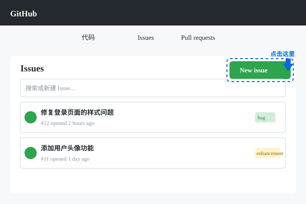

10. Issue管理
📋
Issue是GitHub的"任务清单"，帮你跟踪bug、功能需求和讨论！
什么是Issue？
Issue是用来追踪项目中的问题、功能请求或任务的工具：
- Bug报告 - 发现了代码错误
- 功能请求 - 希望添加新功能
- 任务 - 需要完成的工作
- 讨论 - 关于项目的讨论
创建Issue

点击"Issues"标签，然后点击"New issue"
- 在仓库页面点击"Issues"标签
- 点击"New issue"
- 填写标题和描述
- 点击"Submit new issue"
标签管理
用标签给Issue分类：
| 标签 | 用途 |
|---|---|
| bug | 标记bug |
| enhancement | 功能增强 |
| documentation | 文档相关 |